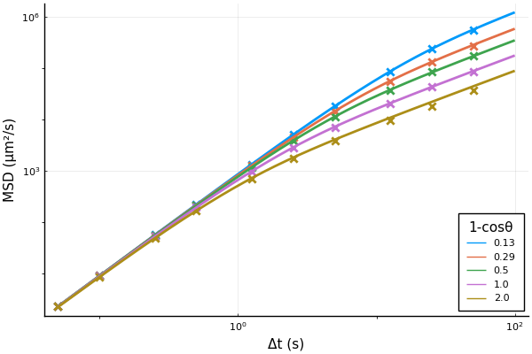

Validation
It's important to check that our microbes behave as expected. In this section, we compare various Bactos.jl functionalities against theoretical results from the literature. If some functionality lacks validation please open an issue.
Velocity autocorrelation functions
The velocity autocorrelation functions for different swimming patterns have been evaluated analytically by Taktikos et al. (2013)<sup>1</sup>.
First, we will set identical parameters for all the swimmers. For RunReverse and RunReverseFlick we will assume that the properties in the forward and backward mode are identical.
U = 30.0 # swimming speed in μm/s
τ_run = 1.0 # average unbiased run time in s
ω = 1 / τ_run # average unbiased turn rate in 1/s
Δt = 0.01 # integration timestep in s
extent = 1e4 # domain size in μmWe initialise three distinct populations, differing only in their motility, merge them all into a single population and initialise our model
n = 200 # number of microbes in each population
microbes_runtumble = [
Microbe{3}(id=i,
turn_rate=ω, motility=RunTumble(speed=[U])
)
for i in 1:n
]
microbes_runrev = [
Microbe{3}(id=n+i,
turn_rate=ω, motility=RunReverse(speed_forward=[U])
)
for i in 1:n
]
microbes_runrevflick = [
Microbe{3}(id=2n+i,
turn_rate=ω, motility=RunReverseFlick(speed_forward=[U])
)
for i in 1:n
]
microbes = vcat(
microbes_runtumble, microbes_runrev, microbes_runrevflick
)
model = initialise_model(;
microbes,
extent, periodic = true,
timestep = Δt
)To evaluate the velocity autocorrelation functions, we only need to store the :vel field of the microbes during the simulation. To get a good statistics we need simulation times that are sufficiently longer than the average run length τ_run.
nsteps = round(Int, 100τ_run / Δt)
adata = [:vel]
adf, = run!(model, microbe_step!, nsteps; adata)We can now separate the dataframes for the three subpopulations by their motility type and evaluate their velocity autocorrelation functions using the built-in autocorrelation function. For large amounts of data autocorrelation can take some time (O(t<sup>2</sup>n)).
adf_runtumble = filter(:id => id -> model.agents[id].motility isa RunTumble, adf)
adf_runrev = filter(:id => id -> model.agents[id].motility isa RunReverse, adf)
adf_runrevflick = filter(:id => id -> model.agents[id].motility isa RunReverseFlick, adf)
adfs = [adf_runtumble, adf_runrev, adf_runrevflick]
Φ = hcat([autocorrelation(a,:vel) for a in adfs]...)The theoretical values (normalized) are given by Taktikos et al. (2013)<sup>1</sup>.
t = range(0, (nsteps-1)*Δt; step=Δt)
Φ_theoretical = hcat([
exp.(-t ./ τ_run),
exp.(-t ./ (τ_run / 2)),
(1 .- t ./ (2τ_run)) .* exp.(-t ./ τ_run),
]...)Agreement between our simulation and theory is great.
plot(
xlims=(0,6τ_run), ylims=(-0.1, 1.05),
xlab="Δt / τ",
ylab="velocity autocorrelation",
)
plot!(t, Φ_theoretical, lw=2, lc=[1 2 3], label=["Run-Tumble" "Run-Reverse" "Run-Reverse-Flick"])
# slice simulation data for better visibility
scatter!(t[1:15:end], Φ[1:15:end,:] ./ U^2, m=:x, mc=[1 2 3], label=false)
hline!([0.0], lw=0.8, ls=:dash, lc=:black, lab=false)
Mean-squared displacement
It's also easy to evaluate the mean-squared displacement (MSD) of our microbes during a simulation. We will now run simulations of run-tumble bacteria using different reorientation distributions (parameterized by the average inclination angle θ), and compare the MSD as a function of θ to theoretical expectations using the well-known diffusivity formula by Lovely and Dahlquist (1975)<sup>2</sup>
\[D = \dfrac{v^2\tau}{3(1-\alpha)}\]
where $\alpha = \left< \cos\theta \right>$ represents the directional persistence of the trajectory.
Since $D$ only depends on $\left< \cos\theta \right>$ and not on the full $P(\theta)$ distribution, we will simply use degenerate distributions $P_i(\theta) = \delta(\theta-\bar\theta)$ for different values $\bar\theta$ and compare the MSD estimated from our simulations to the theoretical expectation. Taktikos et al. (2013)<sup>1</sup> provide the analytical expression for the MSD which interpolates between the short-term ballistic regime and the long-term diffusive regime:
\[{\rm MSD}(t) = 6D\dfrac{\tau}{1-\alpha} \left[ \dfrac{(1-\alpha)t}{\tau}-1+ {\rm exp}\left( -\dfrac{(1-\alpha)t}{\tau} \right) \right]\]
We will setup our systems as usual and then run each simulation independently
using Distributions: Uniform
θs = [π/6, π/4, π/3, π/2, π]
U = 30.0 # swimming speed in μm/s
τ = 1.0 # average run time in s
ω = 1 / τ # average turn rate in 1/s
nmicrobes = 200
microbes = [
[
Microbe{3}(
id = n, turn_rate = ω,
motility = RunTumble(speed=[U], polar=[θ,-θ])
) for n in 1:nmicrobes
] for θ in θs
]
dt = 0.05 # s
L = 500.0 # μm
models = [
initialise_model(;
microbes = microbes[i],
timestep = dt, extent = L
) for i in eachindex(microbes)
]
nsteps = round(Int, 100τ / dt)
adata = [:pos]
adfs = [run!(model, microbe_step!, nsteps; adata)[1] for model in models]We can now evaluate the MSD for each population using the msd function; since the simulations were performed in a periodic domain, we will need to specify the size of the domain as a keyword argument
MSD = msd.(adfs; L=L)We can now slice our experimental data and plot the results.
t = (1:nsteps).*dt
logslice = round.(Int, exp10.(range(0,3,length=10)))
plot(
xlab = "Δt / τ",
ylab = "MSD / (Uτ)²",
legend = :bottomright, legendtitle = "1-α",
scale = :log10
)
scatter!(t[logslice]./τ, hcat(MSD...)[logslice,:]./(U*τ)^2,
m=:x, ms=6, msw=2, lab=false)
for i in eachindex(θs)
α = cos(θs[i])
T = τ / (1-α)
D = U^2*T / 3
dr² = @. 6*D*T * (t/T - 1 + exp(-t/T))
plot!(t./τ, dr²./(U*τ)^2, lab=round(1-α,digits=2), lc=i, lw=2)
end # for
plot!(xticks=exp10.(-1:2), yticks=exp10.(-2:2:2))
References
- Taktikos, J.; Stark, H.; Zaburdaev, V. How the Motility Pattern of Bacteria Affects Their Dispersal and Chemotaxis. PLoS ONE 2013, 8 (12), e81936. https://doi.org/10.1371/journal.pone.0081936.
- Lovely, P.S.; Dahlquist, F.W. Statistical measures of bacterial motility and chemotaxis. Journal of Theoretical Biology 1975, 50 (2), 477-496. https://doi.org/10.1016/0022-5193(75)90094-6